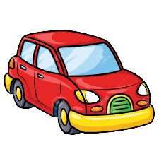

Road Rules 
- Keep to your left if driving on a two-way street or road so that vehicles coming in the opposite direction can pass using the right lane smoothly.
- If you want to turn left ahead, you must stay on the left side before taking a turn.
- If you want to turn right ahead, you must be at the center of the road and then gradually take a broad right turn.
- When you are coming towards a road intersection, road junction, or pedestrian crossing, you must slow down your vehicle.
- If being overtaken by a vehicle, you must not increase the speed of your vehicle or, in any way, prevent the vehicle that is attempting to overtake from passing.
- Overtaking is prohibited in the following cases: If passing would, in any way, be dangerous for other travelers on the road.
- If passing is near a bend, hill, corner or point, as it may lead to a critical accident without clear sight of the road in front
- If the driver upfront has not signaled the driver behind that the former may be overtaken.
- When trying to overtake a vehicle that’s already being passed by the third vehicle, due to lack of space.
- For those driving two-wheelers, you and your pillion must wear a helmet.
- Parking is not permitted on the top of a hill, footpath, near traffic lights, near a crossing on the road, on the road for pedestrians, near the entrance of a building, or if it covers a fire hydrant.
- Your temporary or permanent Vehicle Registration Number (VRN) must always be displayed on the front and back of your vehicle.
- A single pillion and no more is permitted per two-wheeler.
- Drivers must make way for any cyclists on the road.
- The head or tail-lights of your vehicle should never be obstructed.
- On a one-way road, driving in the reverse direction is punishable by law.
- When overtaking another vehicle, one must not go beyond the yellow line.
- One must respect the STOP sign on roads and not stop beyond the sign.
- Honking should only be carried out if necessary.
- When driving on a mountain, or hill, your vehicle must be towards the right side of the road.
- One cannot load the vehicle with certain goods, like Inflammable and explosive goods.
- Overtaking must only be carried out from the right side.